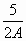

fx50FH使用小貼士
前言: 新會考計算機CASIO fx50FH有不錯的計算功能，這裡提供一些注意事項(小貼士)，希望可以幫助大家盡快適應及充分發揮這部新計算機的優點，若你有其它使用心得，亦歡迎你在WebCal計算機論壇提出及分享。
1. 計算先後次要問題:
計算時最基本的先乘除後加減相信大家都會很熟悉，除了這個之外計算機還有其它的計算次序，若果沒有留心這個問題，就會較容易出現錯誤的答案。
(A) 隱乘及乘號相同的計算次序，這點與EL-506V或者fx-3650P不相同，對於習慣使用506V及3650P的朋友要特別小心這個不同設計。什麼是隱乘？例如: 2A、AB、5 log(3)等等中間省略一個乘號，省略的乘號就是隱乘。fx50FH的設計可以減少混淆及錯誤的機會。
要點是在使用fx50FH時，只要想像有個實質的乘號在隱乘的位置，四則運算計算次序一般較後，就可以清楚知道運算的先後次序。
例如: 按 5÷2A EXE 就相當於 按 5÷2×A EXE，計算結果完全相同。
所以想計算以下算式(假設A=2):

若果按 5÷2A EXE 就會得出錯誤的答案 5 (3650P得出正確答案1.25)，正確方法要運用多一次÷號，亦即是按 5÷2÷A EXE，又或者使用括號，亦即是按 5÷(2A EXE。
其它有關隱乘計算與3650P不同的例子:
(i) 按 20 ÷ 5 log(100 EXE，3650P的答案為2，而FX50FH的答案為8
(ii) 按 6 ÷ 2√( 9 EXE，3650P的答案為1，而FX50FH的答案為9
(iii) 若A=2，按 2A nCr 2 EXE，3650P的答案為15，而FX50FH的答案為6
(iv) 在CMPLX及DEG模式，若果A=30，按 2∠3A EXE，3650P的答案為2i，而FX50FH的答案為59.918+3.140i
(B) 帶有開括號的函數，這點與fx-3650P很不同，fx-3650P絶大多數的函數都沒有自動帶有開括號(例如: sin、cos、log、√等等)，計算的先後次較易混淆及引致錯誤。
要點是fx50FH帶有括號函數的計算次序是最優先，亦即是計算時會先計算括號內數值，接著就會執行帶有括號的函數。
例如: 按出算式 log( 2 + 8 )2 EXE，是先計算 log(2+8)=1，然後再計算 12，所以答案為1，但fx-3650P情況就不同，很多時要按計算函數的性質才可決定，以這個例子 log(2+8)2，二次方是較優先，所以會先計算(10)2=100，然後再計算 log100，最後答案就會變成2。
其它與3650P不同的例子:
(i) 在DEG模式，按出算式 tan( 3 )-1 EXE，3650P的答案為5.8178×10-3，而FX50FH的答案為19.0811
(ii) 按出算式 √(2+7)┘3 EXE，3650P的答案為1.73285，而FX50FH的答案為1
(C) 除號與分號在運算上的分別，除號及分號在數學上的意義是相同(除了分數形態外)，但在計算機上卻因計算先後的順序不同而有分別，這種情況在3650P上特別明顯，因此較容易產生混淆及錯誤。fx50FH在這方面已有很大的改善，在很多情況下已變成沒有分別，但在會考/高考這三個函數 nCr 、nPr及∠還是有分別，原因是分號計算次序較優先，
例子:
(i) 按 12┘3 nCr 2 EXE，答案為6，但按 12÷3 nCr 2 EXE，答案為4
(ii) 按 6 nCr 4┘2 EXE，答案為15，但按 6 nCr 4÷2 EXE，答案為7.5
(iii) 在CMPLX及DEG模式，2∠30┘5，答案為 1.989 + 0.2091i，但2∠30÷5，答案為 0.3464 + 1┘5 i
2. 程式運用
fx50FH的程式容量為680位元，比fx-3650P的360位元多了很多，為了避免白白浪費大量程式空間，大家選擇程式時可以選用一些較長及功能較好的程式，或者是一些網頁上已經整合的程式，若果希望自行將不同的程式整合為一個程式，可以參考程式整合方法的資料。
另一方法是利用多出的程式空間，將一些有用但考試時公式表沒有的公式儲存在程式空間中，以便在考試可以作為參考以用，若果公式較多，建議替公式進行編號工作以減短找尋公式時間，有關做法可以參考公式儲存的方法。
3. 內置程式庫
fx50FH內置23個小程式，其中較有用的數學程式是首五個程式，包括一元二次方程、餘弦定律、希羅公式及常態分佈概率函數等，要注意要在COMP模式才可以使用內置程式。與舊款fx-50F不同，fx50FH沒有將答案儲存在數字記憶中以便用家之後使用(例如舊款fx-50F的一元二次方程會將兩根儲在K4及K5中)，不過若果沒有改變操作模式及再使用內置程式，已輸入的數值會保留在計算機中，只要再使用程式就可以顯示出來，快速接受預設值亦可查閱之前的計算結果。
4. 假分數預設顯示
fx50FH的分數值功能較好，沒有fx-3650P的各種分數計算問題，亦沒有假分數預設顯示問題，由於會考時很多時會使用分數計算，為了使用上的方便，建議將計算設 定為假分數顯示，方法是按 SHIFT MODE → → 2 。
5. 一些省略按法
fx50FH有些省略的按法可以加快計算的速度:
(A) 連鎖計算:
前一次的運算結果可以在下一次的計算中使用(ANS記憶會自動加入算式之中)。
但要注意，在輸入多重指命之後，前一次的運算結果不能被自動入算式之中。
例如: 按 30 + 50 EXE x2 EXE
當按下"x2"時，ANS會自動加入算式中，並作為平方的因變數。
(B) 關括號的省略:
在算式最後位置的關括號可以省略不按(括包連續的關括號)。
例如: 計算 1 ÷ ( 2 + 3 ( 1- 4sin(30) ) )
可按 1 ÷ ( 2 + 3 ( 1 - 4 sin( 30 EXE
最後的兩個關括號可以省略不按。
(C) 結束指令的運用:
結束指令除了EXE之外，還有M+，M-，SHIFT STO [變數記憶]等等。這些結束指令會令算式立即執行，並同時有其它的功能，所以運用適當是可以省略了按EXE這個步驟。
例題: 計算 tan30 + cos30 並將結果儲存於記憶A。
按 tan30 + cos30 STO A
因此無需要再按EXE
(D) 數值記憶運用
fx-3650P在計算完結後，儲存包含Ans變數算式的答較容易引致錯誤或困擾，例如: 按 3 EXE ，這時Ans變數為3，再按 5Ans EXE (算式包含Ans)，若果想將答案15儲存，再按 SHIFT STO A ，這時儲存的數值會變為75 (自動再計算多一次 5Ans)，造成一定的麻煩，所以需要按 AC ANS SHIFT STO A才可以正確儲存數值，若果不小心留意更可能造成計算錯誤的問題，fx50FH則不用理會算式是否包含Ans，在計算後 只要再按SHIFT STO A就可以，計算機會執行 Ans→A的算式。
另外fx-3650P在計算完結後，即時使用RCL功能查閱數值，答案記憶不會被更新為查閱記憶的數值，而fx-50FH則會進行更新減少混淆及錯誤的機會。
例如: 記憶A儲存的數值為 9 ，按 1 + 2 EXE 這時顯示答案為 3，再按 RCL A 顯示9，這時若果希望將這個數值再加3，使用連續計算再按 + 3 EXE 希望計算A+3，計算機會變成計算 Ans + 3，而fx-3650P計算機的答案為 6，亦即是並非A+3的答案(12)，而 fx-50FH (與其它計算機相同，例如: Sharp EL-506V) 當按 RCL A 顯示A的數值同時會更新Ans記憶的數值，所以按 RCL A + 3 EXE 可以得出正確答案 12。
6. 善用錯誤找尋器
當運算超過了計算的範圍或作了數學上的非法運算就會出現錯誤。出現錯誤時，可以按→(或←)，浮標將會自動移到算式中的出錯位置，只要修改錯誤的部份，算式就可以重新執行，免卻重新再次次輸入算式的麻煩。
若果錯誤不太明顯，可以參考出現錯誤種類，對於錯誤的找尋會有很大的幫助，一般最常見的是Syntax ERROR及Math ERROR，Syntax
ERROR表示計算格式有問題，而Math ERROR表示(i)中間或最後計算結果超出容許的範圍(絶對值大於10100)或(ii)
輸入數值超出計算機容許的範圍或 (iii)非法的數學運算，例如: 除以0等。
另外要注意若果算式過長，會增加錯誤找尋的困難，因此若果要計算很長的算式，建議將算式分成幾個較短的算式，然後用連鎖計算的方法執行，這樣一但出錯，由於算式較短，再加上，
可以參考計算過程中所產生的數值，因此可以有效地減低錯誤找尋的困難。
返回 CASIO fx-50FH、fx-3650P II、fx-50FH II及fx-50F PLUS 程式集